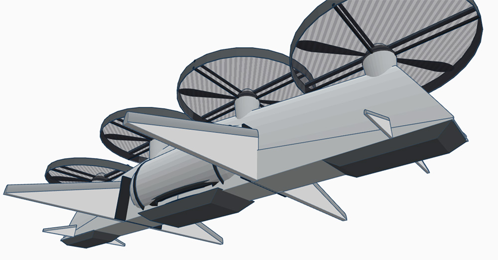
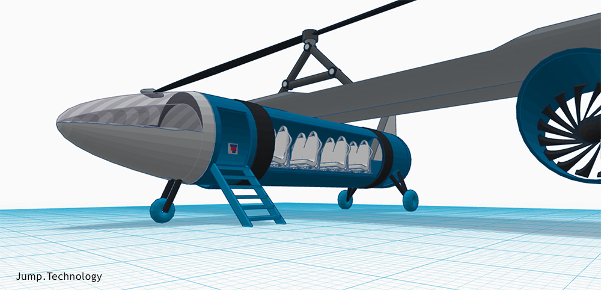

Our initial model was created in SketchUp from two Northrop YB-49 flying wings.
The YB-49 first flew in 1949 and provided research used later for the Stealth Bomber.

Based on feedback from Dr. Danial Cooksey at Georgia Tech's Aerospace Systems Design Laboratory (ASDL), we made the following updates:
- 1. Reduced the number of propellers
- 2. Switched to a single wing
- 3. Added holes to control airflow over the wing
Our changes resulted in a flying wing optimal for carrying heavy cargo, which we named Project Wing 2.0.

Next we applied what we learned to designs that would fit within HyperLoop transit tubes, and the HyperWing was born:

Old Technology with New Innovations
We used 4 pivoting propellers on the wings to provide both forward momentum and downward thrust when hovering.
Above the wing, a gyrocopter rotor provides lift and allows the HyperWing to land smoothly if power fails.
We used old technology developed for the Fairey Gyrodyne and added noise cancelation to the rotor tip-jets to allow the gyrocopter blade to re-engage quietly after hovering.
The cargo/passenger area uses a gyroscope to remain upright as the plane's wing surface pivots from the bottom to the top.
The same holes that float the HyperLoop like an air-hockey puck, provide "Boundary Layer Suction" on the top of the wing for extra vertical lift.
View HyperWing's Safety Features and learn How it Works after watching our interview with Dr. Danial Cooksey at Georgia Tech...